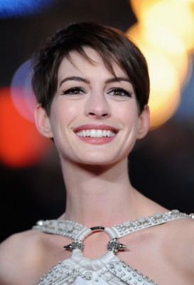
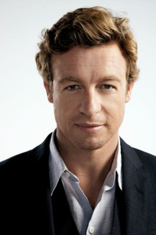
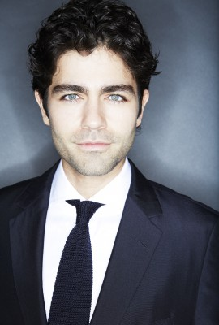
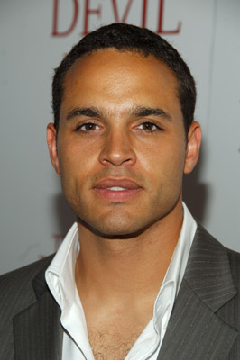
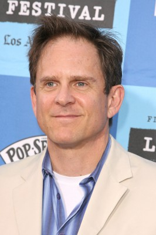
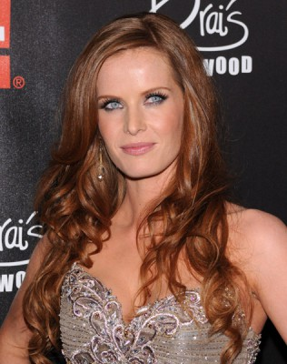

#5709 Der Teufel trägt Prada
Alternativ: The Devil Wears Prada
Auszeichnungen: für 2 Oscars nominiert 1 GoldenGlobes gewonnen

 IMDB-Wertung: 6.8 / 10
IMDB-Wertung: 6.8 / 10  Metascore: 0
Metascore: 0 
In der Welt der Mode pflegen die ihre Eitelkeit, die es sich leisten können, und alle anderen schuften bis zum Umfallen. Andrea wird die neue Assistentin von Miranda Priestley, der Leiterin des Modeimperiums Runway. Und während die despotische Miranda eine wahrhafte Teufelin von einer Chefin ist, versucht Andrea einfach nur, einen guten Job zu machen.
Jahr: 2006
Dauer: 109 Minuten
FSK: 0
Land: USA Studio: 20th Century FoxTonspuren:
Untertitel:
Auflösung: 1080p (1920x816) Größe: 8601 MB
Genre: Drama, Komödie
Regisseur: David Frankel
Drehbuch: Monika Peetz
Soundtrack:
Darsteller:
 Meryl Streep als Miranda Priestly
Meryl Streep als Miranda Priestly-  Anne Hathaway als Andy Sachs
 Emily Blunt als Emily
Emily Blunt als Emily Stanley Tucci als Nigel
Stanley Tucci als Nigel-  Simon Baker als Christian Thompson
-  Adrian Grenier als Nate
 Tracie Thoms als Lily
Tracie Thoms als Lily Rich Sommer als Doug
Rich Sommer als Doug-  Daniel Sunjata als James Holt
-  David Marshall Grant als Richard Sachs
 James Naughton als Stephen
James Naughton als Stephen- Tibor Feldman als Irv Ravitz
-  Rebecca Mader als Jocelyn
- Gisele Bündchen als Serena
- George C. Wolfe als Paul
 John Rothman als Editor
John Rothman als Editor- Stephanie Szostak als Jacqueline Follet
- Colleen Dengel als Caroline
- Suzanne Dengel als Cassidy
- Heidi Klum als Herself
- Valentino Garavani als Himself
- Bridget Hall als Herself
- Ines Rivero als Clacker in Elevator
- Alyssa Sutherland als Clacker
- Robert Verdi als Fashion Reporter
- Paul Keany als St. Regis Butler
- David Callegati als Massimo
- Rori Cannon als Girl at Party
- James Cronin als Ambassador
- Eric Seltzer als Roy
- Lindsay Brice als PR Woman
- Ilona Alexandra als Red Carpet Celebrity , uncredited
- Frank Anello als Security , uncredited
- Alexander Blaise als French Bellhop , uncredited
- Marie Brandt als Fashion Show Attendee , uncredited
- Carl Burrows als Businessman , uncredited
- Molyneau DuBelle als Parisian Luncheon Guest , uncredited
- Pamela Fischer als Teacher , uncredited
- Alexie Gilmore als Clacker , uncredited
- Andie Karvelis als Girl in Cafe , uncredited
- Tim Krueger als Fund Raiser , uncredited
- Hector Lincoln als Himself , uncredited
- Nina Lisandrello als Clacker , uncredited
- Ivan Magrin-Chagnolleau als Parisian Luncheon Guest , uncredited
- Matt Murray als Paparazzo , uncredited
- Ernesto Nodal als Black & White Ball Guest , uncredited
- Emily Sandberg als Clacker , uncredited
- Ingrid Schram als Clacker , uncredited
- Jennifer Scott als Counter Girl , uncredited
- Caroline Slaughter als Runway Editor , uncredited
Datei: X:\2006(N-Z)\Teufel trägt Prada, Der (2006, FSK0, 1920x816).mkv seit 13.03.2017
Festplatte: HD 2005(G-Z)-2006(A-Z)
 Es gibt insgesamt 62 Filme in der Gruppe '2006(N-Z)'
Es gibt insgesamt 62 Filme in der Gruppe '2006(N-Z)'